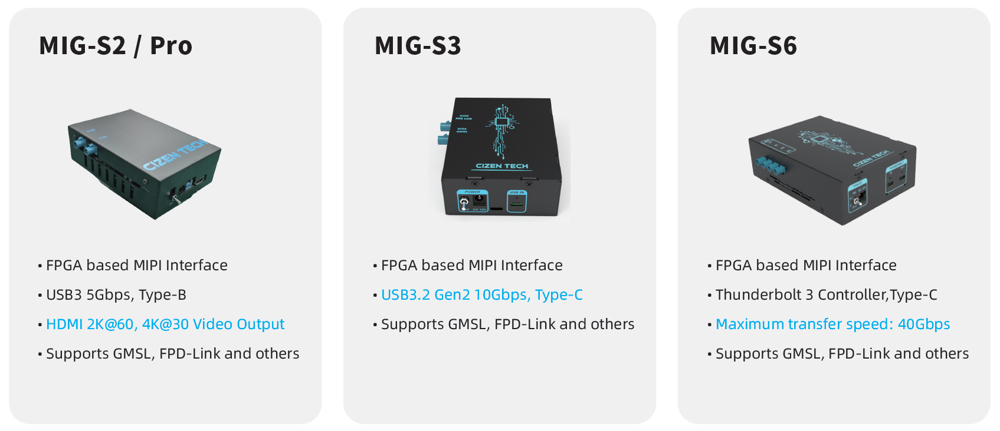

Frame Grabber
MIG Series Frame Grabber — MIG-S2 / MIG-S2 Pro / MIG-S3 / MIG-S6
A compact, highly compatible MIPI-interface image capture card for automotive camera module systems. It supports GMSL / FPD-Link / Clockless Link / MIPI and is designed for AI/ADAS algorithm development after camera activation and for in-line camera image-quality testing.
Pairs with the CameraMaster software for module bring-up, configuration, and live capture.
1. Overview

The MIG-S2 / MIG-S2 Pro is a compact, highly compatible, and reliable MIPI-interface image capture card designed for automotive camera module systems. With a streamlined design and ease of use, it supports image acquisition for most modules on the market. Its scalability and stable testing environment make it ideal for AI/ADAS algorithm development post-camera activation and for in-line camera image-quality testing.
- Activation Experience — 500+ modules
- Broad System Compatibility — Windows & Linux
- High-Speed Data Transfer — USB 3.2 Gen 1 (5 Gbps), USB 3.2 Gen 2 (10 Gbps), Thunderbolt 3 (40 Gbps)
- Wide Power Range — 1–20 V module power supply
- Deserializer Compatibility — Supports ADI / TI / ROHM / SONY deserializer boards
- HDMI Display — 2K@60 / 4K@30 output (MIG-S2 Pro only)
2. Key Features
| # | Feature | Description |
|---|---|---|
| 01 | Interface | For Windows 10 or higher. I2C camera control, link configuration, and sensor power sequencing. |
| 02 | Ser/Des Support | Supports deserializers from many major global manufacturers. |
| 03 | CameraMaster™ Software | Dedicated image-testing program providing operation and control for various cameras. |
| 04 | Compact Size | MIG-S2 offers a compact size with powerful performance, and basically includes a dual FAKRA deserializer (Maxim & TI). |
| 05 | Development Environment | Various SDKs to meet diverse developer needs — SDK for C/C++ and SDK for Python. |
3. Models
MIG-S2
- FPGA-based MIPI interface
- FX3 USB 3.0 controller
- Maximum transfer speed: 5 Gbps
- Supports GMSL, FPD-Link and other SerDes interfaces
- MAX9296A deserializer board included, FPD-Link III selectable
MIG-S2 Pro
- FPGA-based MIPI interface
- FX3 USB 3.0 controller
- Supports GMSL, FPD-Link and other SerDes interfaces
- MAX9296A deserializer board included, FPD-Link III selectable
- Supports HDMI video output
MIG-S3
- FPGA-based MIPI interface
- USB 3.2 Gen 2 Type-C controller
- Maximum transfer speed: 10 Gbps
- Supports GMSL, FPD-Link and other SerDes interfaces
- Compact design: 107 × 86 × 40 mm
MIG-S6
- FPGA-based MIPI interface
- Thunderbolt 3 controller
- Maximum transfer speed: 40 Gbps
- Supports GMSL, FPD-Link and other SerDes interfaces
- MAX9296A deserializer board included, FPD-Link III selectable
4. Specifications
| Item | MIG-S2 | MIG-S2 Pro | MIG-S3 | MIG-S6 |
|---|---|---|---|---|
| Model Name | MIG-S2 | MIG-S2 Pro | MIG-S3 | MIG-S6 |
| Dimension | 146 × 100 × 50 (mm) | 146 × 100 × 50 (mm) | 107 × 86 × 40 (mm) | 170 × 118 × 42 (mm) |
| MIPI Interface | MIPI-CSI-2, 1/2/4-lane D-PHY rated at 2.5 Gbps/lane | MIPI-CSI-2, 1/2/4-lane D-PHY rated at 2.5 Gbps/lane | MIPI-CSI-2, 1/2/4-lane D-PHY rated at 2.5 Gbps/lane | MIPI-CSI-2, 1/2/4-lane D-PHY rated at 2.5 Gbps/lane |
| Supported Video Format | 8-bit to 16-bit RAW, YUV422, RGB888 | 8-bit to 16-bit RAW, YUV422, RGB888 | 8-bit to 16-bit RAW, YUV422, RGB888 | 8-bit to 16-bit RAW, YUV422, RGB888 |
| DPS | 2CH, 1–20 V forcing voltage, 0–2 A current measurement | 2CH, 1–20 V forcing voltage, 0–2 A current measurement | 2CH, 1–20 V forcing voltage, 0–2 A current measurement | 4CH, 1–20 V forcing voltage, 0–2 A current measurement |
| Supported Ser/Des | GMSL1, GMSL2/1, GMSL3/2, FPD-Link III | GMSL1, GMSL2/1, GMSL3/2, FPD-Link III | GMSL1, GMSL2/1, GMSL3/2, FPD-Link III / IV | GMSL1, GMSL2/1, GMSL3/2, FPD-Link III |
| Input Interface | 2× FAKRA connection | 2× FAKRA connection | FAKRA Z connector | 4× FAKRA connection |
| Output Interface | USB 3.0 Type-B connector (max. transfer speed 5 Gbps) | USB 3.0 Type-B connector; HDMI video output 2K@60, 4K@30 | USB 3.2 Gen 2 Type-C connector (max. 10 Gbps) | Thunderbolt 3, C-Type (max. 40 Gbps, effective 22 Gbps) |
| Power In | 12 V / 5 A DC adaptor | 12 V / 5 A DC adaptor | 12 V / 5 A DC adaptor | 12 V / 5 A DC adaptor |
All specifications are typical values and subject to change without notice.
5. Development Environment
The MIG series provides various SDKs to meet diverse developer needs:
- SDK for C/C++
- SDK for Python
See the MIG Grabber SDK page for API usage.
CIZEN TECH Co., Ltd.
624, 6F, 118 LS-ro 116beon-gil, Dongan-gu, Anyang-si, Gyeonggi-do, Republic of Korea